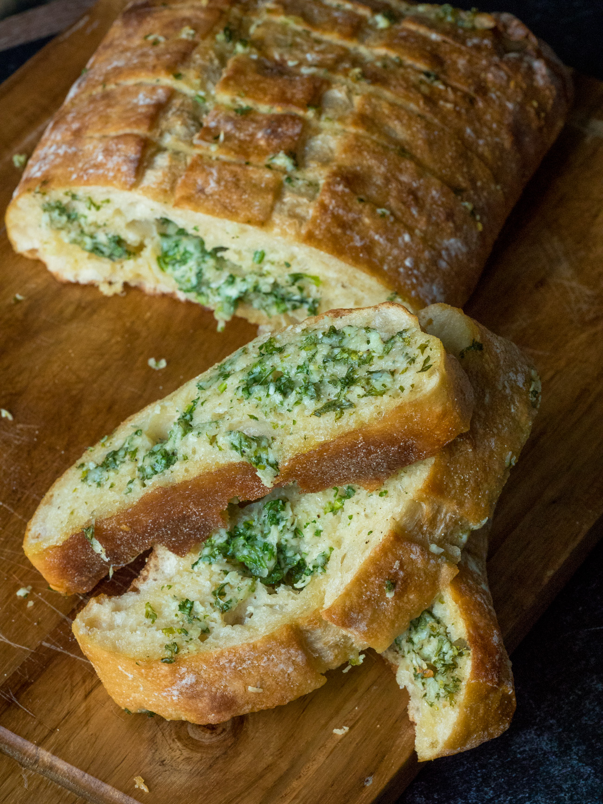

<!DOCTYPE html>
<html lang="en">
<head>
    <meta charset="UTF-8">
    <title>Document</title>
</head>
<body>
    
</body>
</html>

<h1> Garlic bread </h1>



<p> </p>

<h2>Ingredients</h2>
<ul>
    <li>300g bread, loaf</li>
    <li>2 gloves of garlic</li>
    <li>1 tablespoon oregano</li>
    <li>50g butter, at room temp</li>
    <li>3 tablespoons olive oil</li>
    <li>350g mixed cheeses</li>
   
</ul>
<p></p>
<h2>Execution method</h2>
<ol>
     <li>Preheat the oven to 200ο C (390ο F) set to fan.</li>
     <li>Cut the loaf of bread in half, on the bottom side, to make a “nest” for the filling. You should not cut the loaf all the way through.</li>
     <li>Remove the crumb and put it in a blender. Add the garlic, oregano, and beat well until the garlic and the bread are completely crushed.</li>
     <li>Add the butter, 2 tablespoons olive oil, 300 g of the mixed cheeses, and beat well until homogenized.</li>
     <li>Stuff the bread with the filling and transfer the loaf to a baking pan lined with parchment paper, cut-side facing down.</li>
     <li>Spread 1 tablespoon olive oil, 50 g of the cheese, and bake the bread for 10 minutes.</li>
     <li>Place a frying pan over high heat.</li>
     <li>Cut the garlic bread into slices and add them to the pan until golden.</li>
     <li>Remove and serve.</li>
</ol>